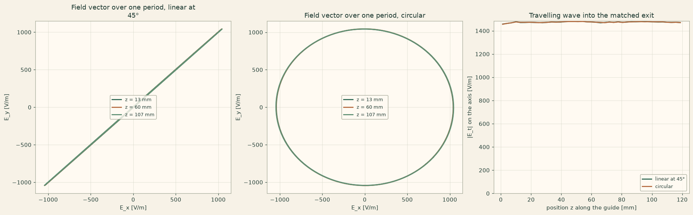
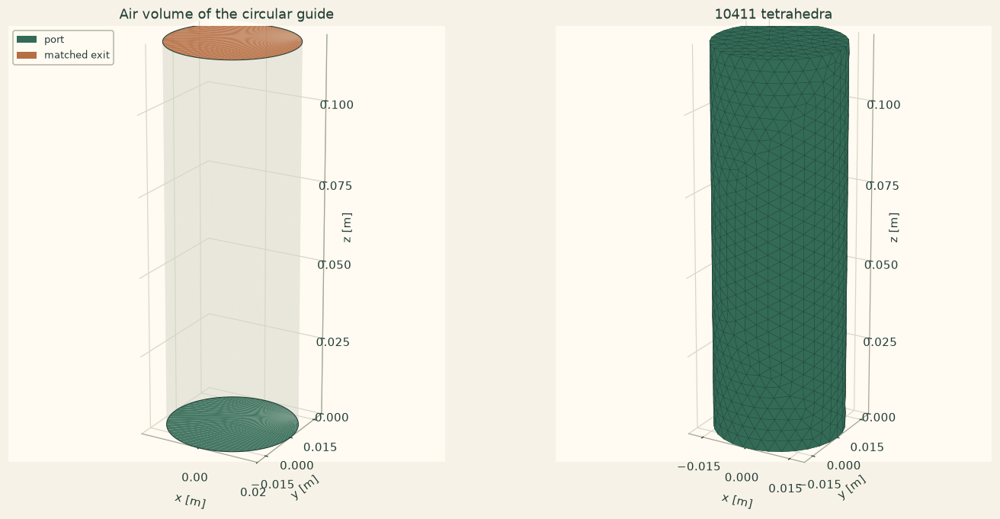

Docs › Examples › Polarized ports of a circular waveguide
Electromagnetic waves · 3D
Polarized ports of a circular waveguide
A circular waveguide whose degenerate TE11 port modes are aligned and combined into a linearly and a circularly polarized wave.

What it computes
OneSimulation computes the TE11 pair on the meshed port of a guide read from STEP, reads the orientation the mesh gave the two modes, and turns any wanted polarization into amplitudes of a waveguide mode basis. Second-order Nedelec elements solve the guide driven into a matched impedance termination, and the field on the axis gives tilt, axial ratio, sense of rotation and propagation constant. The script that builds the STEP file comes with the notebook.
What it checks
The aligned linear drive arrives at 45.01 degrees with axial ratio 0.002 and the circular drive with axial ratio 0.996 and the requested rotation; the port cutoffs are within 0.8 % of the Bessel zero (4.425 against 4.393 GHz), the propagation constant within 0.52 % of the closed form, and the field magnitude varies by only 1.7 % along the matched guide.
Geometry
The notebook starts at the import of the CAD file polarized_circular_waveguide_port.step: STEP (AP242), readable by any CAD program, with the names of the faces that the boundary conditions use. Put it next to the notebook.

The geometry script
The script polarized_circular_waveguide_port_geometry.py builds the geometry with the CAD objects of OneSimulation and writes the file. Change a dimension there, run it, and run the notebook again.
"""Geometry of the OneSimulation example "Polarized ports of a circular waveguide".
Builds the air volume of a circular waveguide, 20 mm in radius and 120 mm long, with the CAD
objects of OneSimulation and writes polarized_circular_waveguide_port.step. The file names three
face groups: `port` (the feed cross-section at z = 0), `exit` (the far cross-section, terminated
by a matched boundary) and `wall` (the cylindrical metal wall).
"""
from onesim.cad.d3 import Cylinder
guide = Cylinder(radius=0.020, length=0.120)
faces = guide.boundaries
guide = guide.grouped(
port=faces.bottom, exit=faces.top, wall=faces.all - faces.bottom - faces.top
)
guide.save("polarized_circular_waveguide_port.step")The notebook
The complete notebook, cell by cell. Run it to produce the figures and the comparison printout.
The fundamental TE\(_{11}\) mode of a circular waveguide is twofold degenerate: two patterns of the same cutoff frequency, rotated by 90° against each other, carry the two polarizations. A numerical mode solver on a meshed port returns some orthogonal pair of this degenerate eigenspace, turned by an angle that depends on the mesh. To excite a defined polarization, the pair must be aligned first; any polarization, linear at any angle or circular, is then a complex combination of the two modes:
The air-filled guide of radius \(a\) comes from the CAD file polarized_circular_waveguide_port.step with the face groups port, exit and wall, written by polarized_circular_waveguide_port_geometry.py with the CAD objects of OneSimulation. The port carries a WaveguideModeBasis of the first two numerical TE eigenmodes with the amplitudes \(a_1,a_2\); the wall is a perfect conductor; the exit is an impedance boundary with the TE\(_{11}\) wave admittance \(Y=\beta/(\omega\mu_0)\), which absorbs the travelling mode without reflection. Nédélec elements of order 2 solve
Reference (D. M. Pozar, Microwave Engineering, 4th ed., Wiley 2012, §3.4; C. A. Balanis, Advanced Engineering Electromagnetics, 2nd ed., §9.4).
for a circularly polarized wave on the axis: equal components in quadrature (axial ratio 1), with \(|\mathbf E_t|\) constant along the matched guide and the phase growing as \(\beta z\).
import numpy as np
from onesim.cad.exchange import load
from onesim.materials import VACUUM_PERMEABILITY, VACUUM_PERMITTIVITY
from onesim.materials.electromagnetic import IsotropicElectromagneticMaterial
from onesim.meshing import TetrahedralMesher
from onesim.numerics import Numerics
from onesim.numerics.fem import FiniteElement, Nedelec
from onesim.numerics.linear import ComplexSparseDirect
from onesim.physics.electromagnetics import (FrequencyDomainMaxwell, ImpedanceBoundary, NumericalWaveguideMode, PerfectElectricConductor,
WaveguideModeBasis, WaveguidePort)
from onesim.simulation import Problem, Simulation
from onesim.visualization import theme, plots
theme.set()Geometry and mesh
With a radius of 20 mm, TE11 cuts off at 4.39 GHz and TM01 at 5.74 GHz; the guide is driven at 5.4 GHz, where only the TE11 pair propagates.
guide = load("polarized_circular_waveguide_port.step")
faces = guide.boundaries
a, length = guide.size[0] / 2, guide.size[2]
mesh = TetrahedralMesher(target_size=0.004).generate(guide)
fig = plots.figure(1, 2, size=(13, 5.5))
plots.geometry(guide, selection={"port": faces.port, "matched exit": faces.exit}, labels=False,
camera=plots.Camera(elevation=20, azimuth=-60), title="Air volume of the circular guide", ax=fig[0])
plots.mesh(mesh, groups=("all",), legend=False, camera=plots.Camera(elevation=20, azimuth=-60), title=f"{mesh.cell_count} tetrahedra", ax=fig[1])
plots.show()Model
drive solves the guide for a pair of modal amplitudes. A first solve with \((a_1,a_2)=(1,0)\) binds the two mesh modes; their fields at the centre of the port form the matrix that converts a wanted polarization into amplitudes.
frequency = 5.4e9
c0 = 1 / np.sqrt(VACUUM_PERMEABILITY * VACUUM_PERMITTIVITY)
kc, k0 = 1.841183781 / a, 2 * np.pi * frequency / c0
beta = np.sqrt(k0**2 - kc**2)
model = FrequencyDomainMaxwell(domain=guide.volume, frequency=frequency, material=IsotropicElectromagneticMaterial(),
phasor_convention="exp(-i*omega*t)", amplitude_convention="peak")
numerics = Numerics(spatial=FiniteElement(element=Nedelec(order=2)), linear_solver=ComplexSparseDirect())
drive = lambda amplitudes: Simulation(problem=Problem(name="Circular guide with a polarized port", geometry=guide, physics=(model,), boundary_conditions=(
WaveguidePort(boundary=faces.port, physics=model, incident_power=1.0, mode=WaveguideModeBasis(
modes=(NumericalWaveguideMode("TE", order=1), NumericalWaveguideMode("TE", order=2)), amplitudes=amplitudes)),
PerfectElectricConductor(boundary=faces.wall, physics=model),
ImpedanceBoundary(boundary=faces.exit, physics=model, admittance=beta / (2 * np.pi * frequency * VACUUM_PERMEABILITY)))),
mesh=mesh, numerics=numerics).solve_stationary()
first = drive((1.0, 0.0))
pair = [port.mode for _, port in first.operators[model.model_id].ports]
centre = np.column_stack([mode.electric_field(np.zeros((1, 3)))[0, :2] for mode in pair])
print("TE11 pair from the port mesh: cutoffs " + ", ".join(f"{mode.cutoff_frequency / 1e9:.4f} GHz" for mode in pair) +
f" (Bessel zero: {c0 * kc / (2 * np.pi) / 1e9:.4f} GHz); polarization angles " +
", ".join(f"{np.degrees(np.arctan2(e[1], e[0])):.1f}°" for e in centre.T))
wanted = {"linear at 45°": np.array([1.0, 1.0]) / np.sqrt(2), "circular": np.array([1.0, 1.0j]) / np.sqrt(2)}
amplitudes = {name: np.linalg.solve(centre, target) for name, target in wanted.items()}
solutions = {name: drive(tuple(values / np.linalg.norm(values))) for name, values in amplitudes.items()}Comparison with the closed forms
On the axis the transverse field gives the polarization ellipse at every position: its tilt, its axial ratio (minor over major axis) and its sense of rotation; the amplitudes \((1,\mathrm i)\) turn the field from \(x\) towards \(y\) in time. The magnitude shows whether the exit reflects, the phase slope is the propagation constant.
z = np.linspace(0.01 * length, 0.99 * length, 41)
axis = {name: result.field(model.electric_field).evaluate(np.column_stack((np.zeros_like(z), np.zeros_like(z), z)))[:, :2]
for name, result in solutions.items()}
print("drive tilt [°] axial ratio rotation |E_t| max/min on the axis beta [rad/m] closed form deviation")
for name, field in axis.items():
ex, ey = field[:, 0], field[:, 1]
tilt = 0.5 * np.degrees(np.arctan2(np.mean(2 * (ex * ey.conj()).real), np.mean(np.abs(ex) ** 2 - np.abs(ey) ** 2)))
ratio = np.mean(np.abs(np.abs(ex + 1j * ey) - np.abs(ex - 1j * ey)) / (np.abs(ex + 1j * ey) + np.abs(ex - 1j * ey)))
magnitude = np.linalg.norm(np.abs(field), axis=1)
slope = np.polyfit(z, np.unwrap(np.angle(ex + ey)), 1)[0]
turn = "none" if ratio < 0.05 else ("x -> y" if np.mean((ex.conj() * ey).imag) > 0 else "y -> x")
tilt = f"{tilt:9.2f}" if ratio < 0.95 else f"{'-':>9s}"
print(f"{name:15s} {tilt} {ratio:13.4f} {turn:6s} {magnitude.max() / magnitude.min():22.4f}"
f" {slope:16.3f} {beta:13.3f} {100 * (slope / beta - 1):+10.3f} %")
print("closed form: linear drive -> tilt 45°, axial ratio 0; circular drive -> axial ratio 1, rotation x -> y; matched exit -> max/min 1")Figure
The tip of the electric field vector on the axis over one period at three positions along the guide, and the field magnitude along the axis.
phase = np.exp(-2j * np.pi * np.linspace(0, 1, 121))
stations = {f"z = {1e3 * z[index]:.0f} mm": index for index in (4, 20, 36)}
fig = plots.figure(1, 3, size=(17, 5.2))
for panel, (name, field) in enumerate(axis.items()):
plots.line(y={label: ((field[index, 0] * phase).real, (field[index, 1] * phase).real) for label, index in stations.items()},
xlabel="E_x [V/m]", ylabel="E_y [V/m]", title=f"Field vector over one period, {name}", legend="center", ax=fig[panel])
plots.line(1e3 * z, {name: np.linalg.norm(np.abs(field), axis=1) for name, field in axis.items()}, ylimits=(0, None),
xlabel="position z along the guide [mm]", ylabel="|E_t| on the axis [V/m]", title="Travelling wave into the matched exit",
legend="lower right", ax=fig[2])
plots.show()Going further
Choose wanted = np.array([1, -1j]) / np.sqrt(2) for the opposite sense of rotation, or replace the matched exit by a perfect conductor: the reflected circular wave returns with the opposite handedness, which is how a polarizer and a short separate transmit and receive channels in an antenna feed.